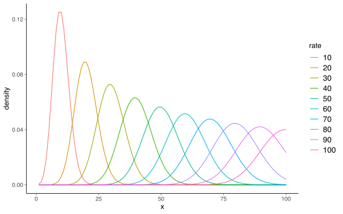
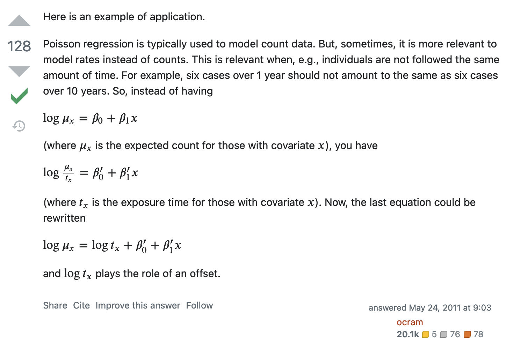
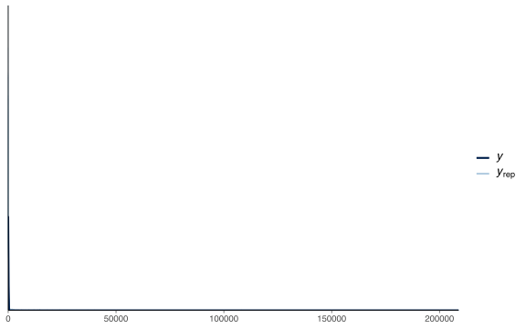
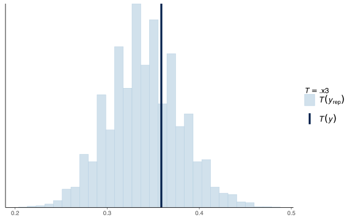

ROS Ch. 15
Minho Shin
Ph.D Student
Lab of Cognitive Neuroscience
Department of Brain Sciences
DGIST
Load library
Load libraries that are going to be used throughout the two chapters.
ROS Ch. 15 Other generalized linear models
Poisson distribution
Load Roaches
First, load data
Plot data
# y: # roaches caught in a set of traps
# roach1: pre-treatment roach level
# treatment: indicator of pest management
# senior: whether the building is restricted to the elderly
roaches |>
ggplot() +
geom_histogram(
aes(x = roach1, fill = factor(treatment)),
position = "identity",
colour = NA,
alpha = .5,
binwidth = 10
)Fit negative binomial model in brms
roaches$roach100 <- roaches$roach1/100
M1 <- brm(
y ~ roach100 + treatment + senior + offset(log(exposure2)),
family = negbinomial(link = "log"),
data = roaches,
refresh = 0,
file = here::here("Ch15", "m1_roaches.rds")
)
print(M1) Family: negbinomial
Links: mu = log; shape = identity
Formula: y ~ roach100 + treatment + senior + offset(log(exposure2))
Data: roaches (Number of observations: 262)
Draws: 4 chains, each with iter = 2000; warmup = 1000; thin = 1;
total post-warmup draws = 4000
Population-Level Effects:
Estimate Est.Error l-95% CI u-95% CI Rhat Bulk_ESS Tail_ESS
Intercept 2.84 0.23 2.39 3.30 1.00 4778 2901
roach100 1.33 0.25 0.86 1.85 1.00 4551 2859
treatment -0.78 0.25 -1.26 -0.30 1.00 4886 3224
senior -0.33 0.26 -0.84 0.18 1.00 4895 2796
Family Specific Parameters:
Estimate Est.Error l-95% CI u-95% CI Rhat Bulk_ESS Tail_ESS
shape 0.27 0.03 0.22 0.32 1.00 4766 2930
Draws were sampled using sample(hmc). For each parameter, Bulk_ESS
and Tail_ESS are effective sample size measures, and Rhat is the potential
scale reduction factor on split chains (at convergence, Rhat = 1).Offset?

brms::pp_check() is not useful when changing scales
brms::pp_check() is not useful when changing scales

Check the prediction for finding zero roaches
Logistic-binomial model
N <- 100
height <- rnorm(N, 72, 3)
p <- 0.4 + 0.1*(height - 72)/3
n <- rep(20, N)
y <- rbinom(N, n, p)
df_logit_binom <- tibble(
n = n,
y = y,
height = height
)
M2 <- brm(
y | trials(n) ~ height,
family = binomial(link="logit"),
data = df_logit_binom,
refresh = 0,
file = here::here("Ch15", "m2_logit_binom.rds")
)
print(M2) Family: binomial
Links: mu = logit
Formula: y | trials(n) ~ height
Data: df_logit_binom (Number of observations: 100)
Draws: 4 chains, each with iter = 2000; warmup = 1000; thin = 1;
total post-warmup draws = 4000
Population-Level Effects:
Estimate Est.Error l-95% CI u-95% CI Rhat Bulk_ESS Tail_ESS
Intercept -11.45 1.08 -13.59 -9.37 1.00 2960 2423
height 0.15 0.01 0.12 0.18 1.00 2996 2358
Draws were sampled using sample(hmc). For each parameter, Bulk_ESS
and Tail_ESS are effective sample size measures, and Rhat is the potential
scale reduction factor on split chains (at convergence, Rhat = 1).Beta-binomial model
df_logit_binom <- model.frame(M2) |>
as_tibble() |>
mutate(n = as.integer(n))
M2_1 <- brm(
y | trials(n) ~ height,
family = beta_binomial(link = "logit", link_phi = "log"),
data = df_logit_binom,
refresh = 0,
file = here::here("Ch15", "m2_1_beta_binom.rds")
)
print(M2_1) Family: beta_binomial
Links: mu = logit; phi = identity
Formula: y | trials(n) ~ height
Data: df_logit_binom (Number of observations: 100)
Draws: 4 chains, each with iter = 2000; warmup = 1000; thin = 1;
total post-warmup draws = 4000
Population-Level Effects:
Estimate Est.Error l-95% CI u-95% CI Rhat Bulk_ESS Tail_ESS
Intercept -11.42 1.15 -13.71 -9.22 1.00 3540 2920
height 0.15 0.02 0.12 0.18 1.00 3585 2964
Family Specific Parameters:
Estimate Est.Error l-95% CI u-95% CI Rhat Bulk_ESS Tail_ESS
phi 161.14 88.14 55.53 388.81 1.00 3110 2665
Draws were sampled using sample(hmc). For each parameter, Bulk_ESS
and Tail_ESS are effective sample size measures, and Rhat is the potential
scale reduction factor on split chains (at convergence, Rhat = 1).Ordinal regression
Load Storable
First, load data
data_2player <- here::here("Examples", "Storable", "data", "2playergames.csv") |>
read_csv()
data_401 <- data_2player |>
filter(person == 401)
print(data_401)# A tibble: 20 × 9
school person round proposal value vote cutoff.12 cutoff.23 sd.logit
<dbl> <dbl> <dbl> <dbl> <dbl> <dbl> <dbl> <dbl> <dbl>
1 1 401 1 1 40 2 36.9 65.9 7.94
2 1 401 2 1 4 1 36.9 65.9 7.94
3 1 401 3 1 44 3 36.9 65.9 7.94
4 1 401 4 1 23 1 36.9 65.9 7.94
5 1 401 5 1 99 3 36.9 65.9 7.94
6 1 401 6 1 82 2 36.9 65.9 7.94
7 1 401 7 1 81 3 36.9 65.9 7.94
8 1 401 8 1 75 3 36.9 65.9 7.94
9 1 401 9 1 71 3 36.9 65.9 7.94
10 1 401 10 1 66 3 36.9 65.9 7.94
11 1 401 11 1 79 3 36.9 65.9 7.94
12 1 401 12 1 10 1 36.9 65.9 7.94
13 1 401 13 1 45 2 36.9 65.9 7.94
14 1 401 14 1 67 2 36.9 65.9 7.94
15 1 401 15 1 24 1 36.9 65.9 7.94
16 1 401 16 1 68 2 36.9 65.9 7.94
17 1 401 17 1 20 1 36.9 65.9 7.94
18 1 401 18 1 60 2 36.9 65.9 7.94
19 1 401 19 1 50 2 36.9 65.9 7.94
20 1 401 20 1 13 1 36.9 65.9 7.94Fit cumulative logit model
M3 <- brm(
vote ~ value,
family = cumulative(link = "logit"),
data = data_401,
refresh = 0,
file = here::here("Ch15", "m3_ordered_cat.rds")
)
print(M3) Family: cumulative
Links: mu = logit; disc = identity
Formula: vote ~ value
Data: data_401 (Number of observations: 20)
Draws: 4 chains, each with iter = 2000; warmup = 1000; thin = 1;
total post-warmup draws = 4000
Population-Level Effects:
Estimate Est.Error l-95% CI u-95% CI Rhat Bulk_ESS Tail_ESS
Intercept[1] 4.69 1.80 1.72 8.70 1.00 2324 2202
Intercept[2] 8.87 2.70 4.57 15.18 1.00 1403 1370
value 0.13 0.04 0.07 0.23 1.00 1498 1476
Family Specific Parameters:
Estimate Est.Error l-95% CI u-95% CI Rhat Bulk_ESS Tail_ESS
disc 1.00 0.00 1.00 1.00 NA NA NA
Draws were sampled using sample(hmc). For each parameter, Bulk_ESS
and Tail_ESS are effective sample size measures, and Rhat is the potential
scale reduction factor on split chains (at convergence, Rhat = 1).pp_check
According to the textbook,
\[ E(y|x) = 1 * \Pr(y = 1 | x) + 2 * \Pr(y = 2 | x) + 3 * \Pr(y = 3 | x) \]